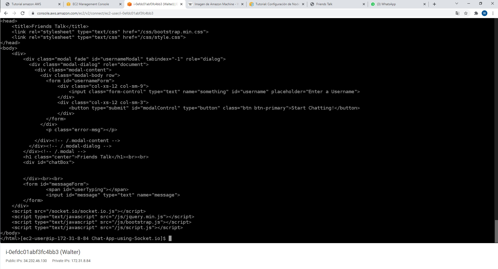
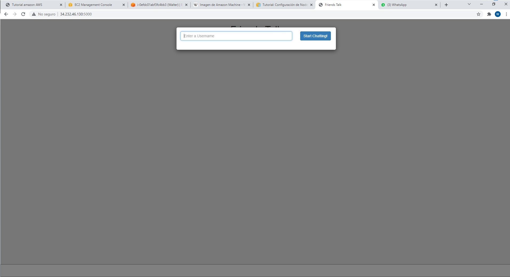

Configuración e inicio de los servicios del simple chat
Ejecutar pm2
pm2 start app.js
Probar ejecucion del codigo
curl 127.0.0.1:5000
Al ejecutar el comando anterior, se deberá ver una imagen como la siguiente:

Al escribir su ip publica en el explorador se deberá ver el sistema en funcionamiento:
